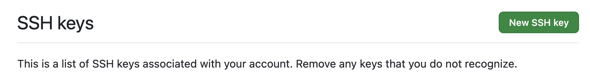
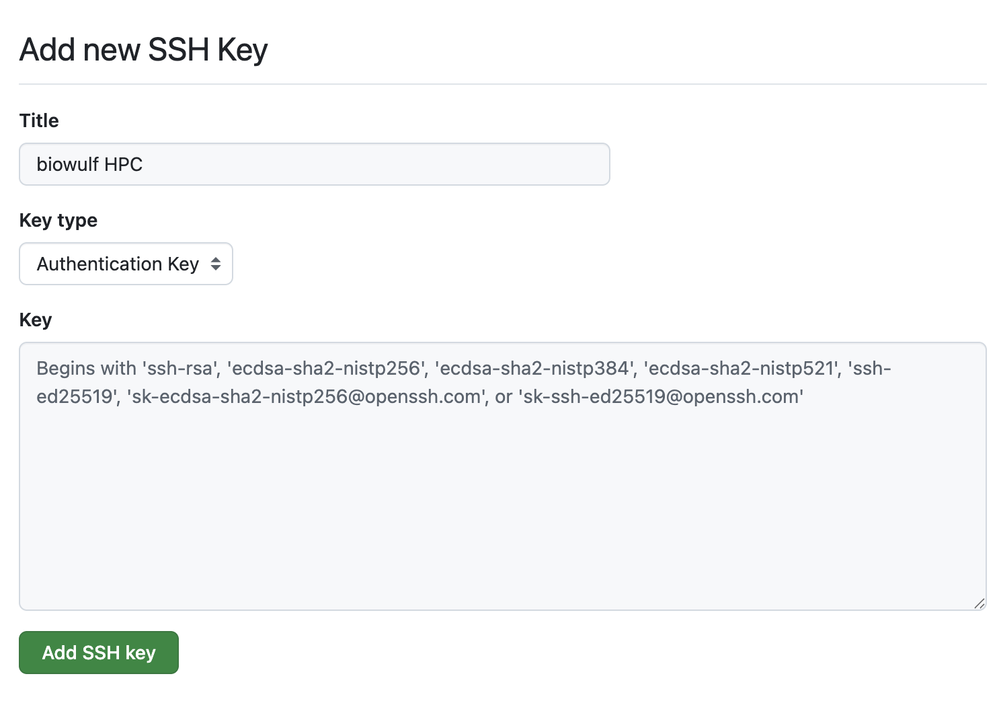
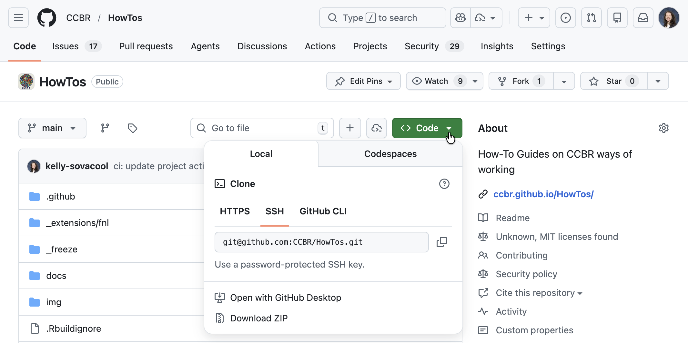

Connect to GitHub with SSH keys
Background
If you have been using a personal access token (PAT) to authenticate with GitHub, it will become much harder to do so after March 1st, 2026.
Classic PATs are authorized for all resources that a GitHub account has access to, so you could create a single classic PAT and use it in lieu of a password for any repository in any organization that you have access to. However, this poses a security risk, so classic PATs will be phased out on March 1st, 2026.
GitHub is recommending switching to fine-grained PATs. However, fine-grained PATs can only be authorized to access resources for a single organization at a time. This means you would need to create a separate fine-grained PAT for every GitHub organization you have access to (e.g. CCBR, NIDAP-Community, NCI-RBL, etc.), and then update your git credential manager to make sure it uses the correct PAT for the correct organization. Additionally, NCI Enterprise requires that PATs must expire every 90 days, so you would need to update them regularly.
Instead, we recommend using Secure Shell Protocol (SSH) for authentication with GitHub. Follow the guide below for step-by-step instructions on creating SSH keys and configuring SSH to work with your GitHub account.
You will need to repeat the steps in this guide for every machine that you use with GitHub, as each one will need its own SSH key file. Most CCBR members will need to generate an SSH key for each of the following:
- GFE laptop
- biowulf/helix
- FRCE
- Any other HPCs or servers you use with git/GitHub
Create a new SSH key for use with GitHub
Generate a new SSH key
Run the following command to generate a new key, replacing your_email@example.com with the primary email associated with your GitHub account. For CCBR members, it should be your NIH email e.g. firstname.lastname@nih.gov.
sh
ssh-keygen -t ed25519 -C "your_email@example.com"It will then prompt you with a location to save the key. Press enter to accept the default location.
output
Generating public/private ed25519 key pair.
Enter file in which to save the key (/Users/$USER/.ssh/id_ed25519):You can press enter again for no password (recommended). If you choose to enter a password, you’ll need to set up your keychain to store it.
output
Enter passphrase for "/Users/$USER/.ssh/id_ed25519" (empty for no passphrase):Add the new SSH key to the ssh-agent
Start up the ssh-agent to run in the background:
sh
eval "$(ssh-agent -s)"It will report the process ID of the ssh-agent:
output
Agent pid 46212Next, if you’re running this on macOS, you’ll need to modify the ssh config file to automatically load keys. If you’re on Linux, there’s no need to modify your ~/.ssh/config. For macOS, open ~/.ssh/config in your preferred text editor and add these lines:
~/.ssh/config
Host github.com
AddKeysToAgent yes
IgnoreUnknown UseKeychain
IdentityFile ~/.ssh/id_ed25519Now add the ssh key to the agent:
sh
ssh-add ~/.ssh/id_ed25519It will report that the new identity was added:
output
Identity added: /Users/$USER/.ssh/id_ed25519 (firstname.lastname@nih.gov)Add the new SSH key to your GitHub Account
Select one of the methods below for adding the new SSH key to your GitHub Account.
Via the web browser
First, print the contents of the public key file and copy it to your clipboard:
sh
cat ~/.ssh/id_ed25519.pubIn a web browser, go to https://github.com/settings/keys
Click New SSH key

- Add a title with a brief description of the key. For example, I use “NCI macOS laptop” for the key I use on my GFE laptop and “biowulf” for the biowulf HPC.
- Select
authenticationfor the type of key. - Paste the key into the
Keyfield. - Click
Add SSH key

Via the GitHub CLI
This option works well on a laptop, but not so well on servers such as biowulf.
If you do not already have the GitHub CLI, install it now: https://github.com/cli/cli#installation
Log in via the gh CLI
Authenticate to GitHub via the gh CLI with the proper scope for adding ssh keys:
sh
gh auth login -h github.com -s admin:public_keyFollow the prompts to log in to GitHub via the web browser, or however you prefer.
output
? Where do you use GitHub? GitHub.com
? What is your preferred protocol for Git operations on this host? HTTPS
? Authenticate Git with your GitHub credentials? Yes
? How would you like to authenticate GitHub CLI? Login with a web browser
! First copy your one-time code: XXXX-XXXX
Press Enter to open https://github.com/login/device in your browser...
✓ Authentication complete.
- gh config set -h github.com git_protocol https
✓ Configured git protocol
✓ Logged in as github-usernameAdd the SSH key to your account
Run the following command to add the key, replacing the title with a brief description of the key. For example, I use “NCI macOS laptop” for the key I use on my GFE laptop and “biowulf” for the biowulf HPC.
sh
gh ssh-key add ~/.ssh/id_ed25519.pub --type authentication --title "NCI macOS laptop"output
✓ Public key added to your accountTest your connection
Try to connect to GitHub via ssh:
sh
ssh -T git@github.comYou’ll see a warning. Type “yes” and press Enter:
output
The authenticity of host 'github.com (IP ADDRESS)' can't be established.
ED25519 key fingerprint is SHA256:+DiY3wvvV6TuJJhbpZisF/zLDA0zPMSvHdkr4UvCOqU.
Are you sure you want to continue connecting (yes/no)?If successful, you’ll see this message:
output
Hi GITHUB-USERNAME! You've successfully authenticated, but GitHub does not provide shell access.Configure your cloned repositories to use SSH
If this is the first time you’re setting up SSH keys with GitHub, you probably cloned your repositories using HTTPS. Go to one of your repos and list the remotes you have configured:
sh
git remote -vIf the url begins with https, it was cloned via HTTPS:
output
origin https://github.com/ORGANIZATION/REPOSITORY (fetch)
origin https://github.com/ORGANIZATION/REPOSITORY (push)You’ll need to change the remote URL to use SSH instead:
sh
git remote set-url origin git@github.com:ORGANIZATION/REPOSITORY.gitReplace ORGANIZATION and REPOSITORY with their actual values, e.g. this repo would be CCBR/HowTos.
You will need to repeat this for every repo you have cloned on your machine. But you don’t have to do it manually: let’s automate it!
Automate: change the remote for all repositories
We can automate this with a bash command to find all git repositories, determine the organization and repository name, and set the remote url to use SSH instead of HTTPS. In my case, I clone all of my repositories to a directory in ~/projects. The following command finds all of the git repos I have cloned:
sh
find ~/projects -name ".git" -type dYou should replace ~/projects with the path where you clone your repos, then run the above command to make sure it can find the cloned repos.
For an individual repo, you can find out the remote url with the following (replace ~/projects/path/to/repo/.git with the actual path for your example repo):
sh
git -C ~/projects/path/to/repo/.git config --get remote.origin.urloutput
https://github.com/ORGANIZATION/REPOSITORY.gitWe can use sed to extract the name of the organization or username and repo on GitHub:
sh
git -C ~/projects/path/to/repo/.git config --get remote.origin.url | sed -E 's|.*[:/]([^/]+)/(.*)\.git/?$|\1/\2|; s|.*[:/]([^/]+)/([^/]+)/?$|\1/\2|')output
ORGANIZATION/REPOSITORYFinally, we can use the git remote command to modify the remote url to use SSH rather than HTTPS. Putting it all together, here’s the full command:
Command to set all remotes to use SSH
sh
find ~/projects -name ".git" -type d 2>/dev/null | sed 's|/.git$||' | while read repo; do
org_repo=$(git -C "$repo" config --get remote.origin.url 2>/dev/null | sed -E 's|.*[:/]([^/]+)/(.*)\.git/?$|\1/\2|; s|.*[:/]([^/]+)/([^/]+)/?$|\1/\2|')
echo $org_repo
git -C $repo remote set-url origin git@github.com:${org_repo}.git
doneThe above command will print the organization & repository name as it goes so you can monitor the progress.
Make sure you replace ~/projects with the path on your machine where you clone your repositories.
Be careful running this command on shared machines such as the Biowulf HPC. You do not want to accidentally edit repos belonging to other users! You may need to first create a text file containing paths to all of your repos, and iterate over that instead of the find command for the while loop.
Cloning new repos
When you make a new clone of a repository, you will need to use the SSH url from now on. You can find the SSH url on a repo’s GitHub repository page by clicking Code, then clicking the SSH tab.

Copy the URL to your clipboard, then in a terminal run git clone using this url:
sh
git clone git@github.com:ORGANIZATION/REPOSITORY.gitoutput
Cloning into 'REPOSITORY'...
remote: Enumerating objects: 3650, done.
remote: Counting objects: 100% (405/405), done.
remote: Compressing objects: 100% (206/206), done.
remote: Total 3650 (delta 281), reused 240 (delta 194), pack-reused 3245 (from 2)
Receiving objects: 100% (3650/3650), 171.17 MiB | 30.70 MiB/s, done.
Resolving deltas: 100% (2135/2135), done.You can test that your SSH key works with your repo by creating a new branch and pushing it:
sh
git switch -c test-ssh
git pushYou’ll see a message like the following if it’s successful:
output
Enumerating objects: 14, done.
Counting objects: 100% (14/14), done.
Delta compression using up to 10 threads
Compressing objects: 100% (10/10), done.
Writing objects: 100% (11/11), 522.94 KiB | 16.87 MiB/s, done.
Total 11 (delta 2), reused 0 (delta 0), pack-reused 0 (from 0)
remote: Resolving deltas: 100% (2/2), completed with 2 local objects.
remote:
remote: Create a pull request for 'test-ssh' on GitHub by visiting:
remote: https://github.com/ORGANIZATION/REPOSITORY/pull/new/test-ssh
remote:
To github.com:ORGANIZATION/REPOSITORY.git
* [new branch] test-ssh -> test-ssh
branch 'test-ssh' set up to track 'origin/test-ssh'.Help and Troubleshooting
Tips for Biowulf
Connecting to GitHub via SSH works on the Biowulf head node, but it does not work on the compute nodes. This means you cannot run git push/git pull in an interactive session if you followed the steps in this guide on Biowulf to set up SSH keys with GitHub.
When you’re working on Biowulf, I recommend opening up two tabs or windows in your terminal: one to log in to the head node, and a second one to log in to your compute node. When you need to synchronize changes with GitHub, you can switch to your head node terminal and run the pull/push command.
View a brief demo here (only NIH users have access to view the video).
To check whether you’re on the head node or a compute node, run hostname:
sh
hostnameIf you’re on a compute node, the host name starts cn, e.g. cn0123. If you’re on the head node, the host name is biowulf.nih.gov.
How to get help
Check out the GitHub Docs for more information about authenticating with SSH keys.
- How to create an ssh key: https://docs.github.com/en/authentication/connecting-to-github-with-ssh/generating-a-new-ssh-key-and-adding-it-to-the-ssh-agent
- How to add an ssh key to your account: https://docs.github.com/en/authentication/connecting-to-github-with-ssh/adding-a-new-ssh-key-to-your-github-account
- Test your connection: https://docs.github.com/en/authentication/connecting-to-github-with-ssh/testing-your-ssh-connection
If you run into problems, first make sure you correctly followed all of the steps in this guide, then try searching for your problem in the GitHub docs. If you’re still not able to solve it, open a question in Discussions to ask for help.